Pulsa un punto para ir a su sección · tecla O para volver aquí desde cualquier diapositiva.
Parte 1Series temporales en SIG y teledetección
La marisma en el tiempo
Series temporales con SIG y teledetección: de las trayectorias GPS a los composites de satélite, con Doñana como laboratorio.
Diego García DíazEstación Biológica de Doñana · CSIC
DatosProtocolo v2 de inundación (Landsat) · GPS de aves simulados
Punto de partida
Un mapa es una foto. La marisma es una película.
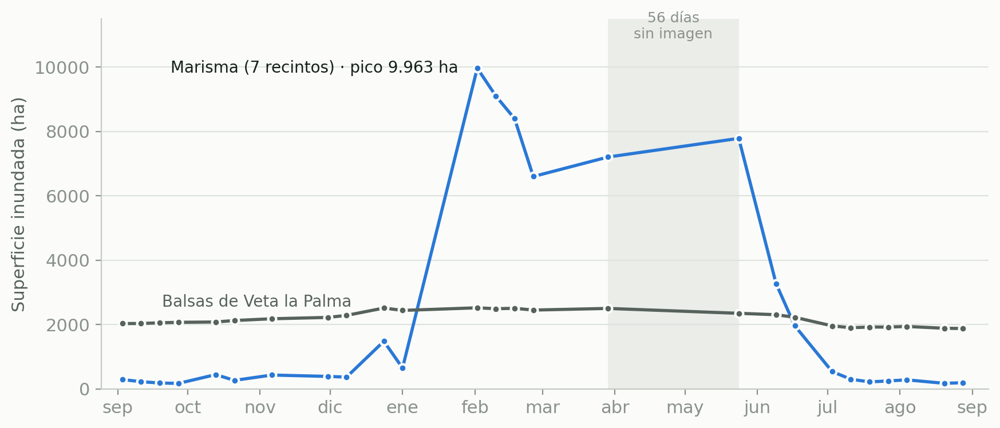
26 escenas Landsat 7/8 · máscaras del Protocolo v2 · ciclo hidrológico 1 sep 2019 – 31 ago 2020
< 500 hade agua en la marisma todo el otoño de 2019
9.963 hael 2 de febrero de 2020, tras las lluvias
≈ 2.000 haconstantes en las balsas de Veta la Palma: el refugio cuando la marisma se seca
ConceptosModelos de datos
Cinco maneras de guardar el tiempo en un SIG
Instantáneas
Una capa por fecha. Simple y universal, pero el tiempo vive en el nombre del archivo.
20200202l8oli…_flood.tif
Periodo de validez
Cada entidad dice desde cuándo y hasta cuándo es cierta. Permite filtrar "lo que había en t".
inundacion_2019_2020
Eventos
Algo ocurre en un lugar y un instante: un avistamiento, un incendio, un fix GPS.
punto + timestamp
Trayectorias
Eventos del mismo objeto ordenados en el tiempo. Aparecen el paso, la velocidad y el giro.
id_ave + orden temporal
Cubo espacio-tiempo
Celdas x·y·t con un valor: la base de los datacubes y de los hot spots emergentes.
xarray · Emerging Hot Spot
FichaSeries temporales
Toda serie es tendencia, estacionalidad y ruido a la vez
Tendencia: el cambio lento y sostenido de fondo. La marisma que se colmata, las cumbres que verdean.
Estacionalidad: el ciclo que se repite cada año. Es la parte más grande y la que más confunde.
Ruido: todo lo demás: nubes mal enmascaradas, errores del sensor, años raros.
El peso de una persona: engorda un poco cada año, en Navidad sube y en verano baja, y cada mañana la báscula marca algo distinto.
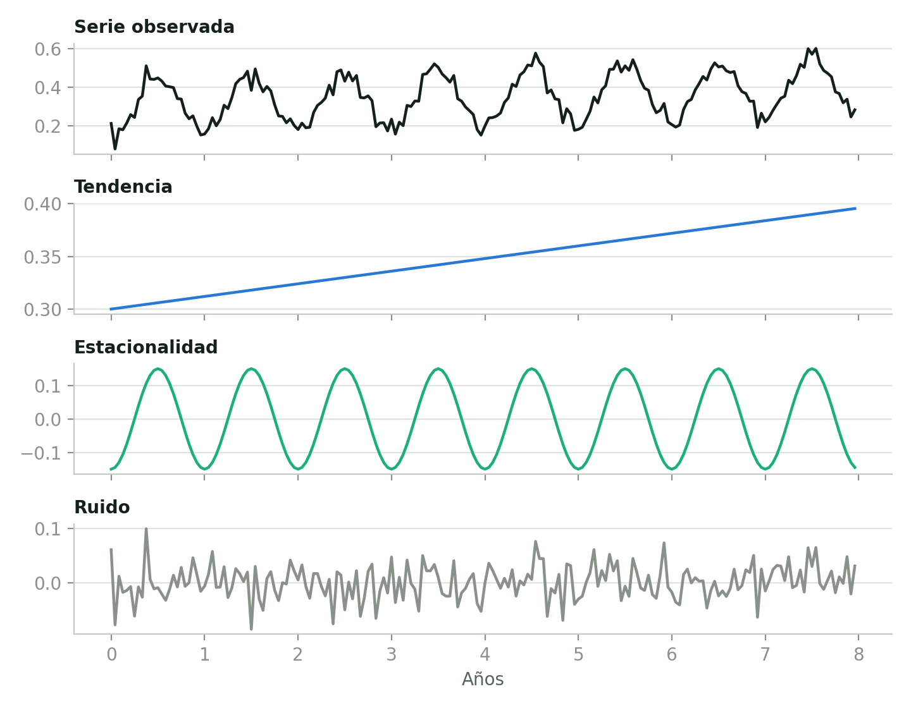
Serie sintética de NDVI mensual · lo de arriba es la suma de las tres de abajo
ConceptosEscala
La frecuencia de muestreo decide qué fenómeno puedes ver
Fuente
Paso típico
GPS de un ave
5 min – 2 h
Sentinel-2 (A+B)
5 días
Landsat 8 + 9
8 días
Landsat en solitario
16 días
Serie Protocolo v2
1984 – 2024
Y el fenómeno tiene sus propios relojes: diario (dormidero/comedero), estacional (invernada, cría), ciclo hidrológico (1 sep – 31 ago) e interanual (sequías).
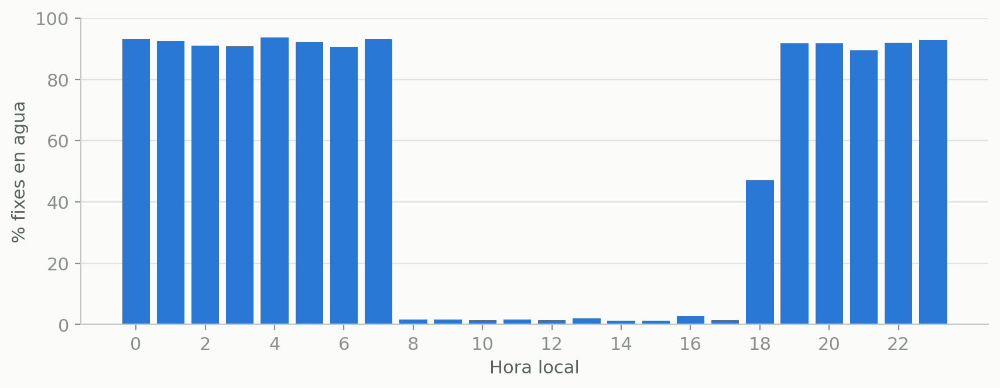
Ánsar común · % de fixes dentro del agua por hora local (oct 2019 – feb 2020)
Con un fix al día a las 13:00, los ánsares casi nunca estarían en el agua. Con uno a las 03:00, casi siempre. Ninguna de las dos respuestas es la real.
Parte IVector
Objetos que se mueven
Fixes GPS, trayectorias, paradas, encuentros y la unión espacio-temporal con la inundación.
VectorDatos de movimiento
Anatomía de un fix
id_ave
ANS01
timestamp (UTC)
2020-01-03T06:02:28Z
hora local
07:02:28
lon · lat
-6.2464 · 36.9382
hdop
2.5
n_sat
8
bateria_v
3.89
Quién, cuándo, dónde… y con qué calidad
El identificador separa trayectorias: nunca calcules pasos mezclando individuos.
La hora siempre en UTC y una columna local para los análisis de ritmo diario. El cambio de hora de octubre y marzo existe.
HDOP y nº de satélites describen la geometría del fix: HDOP alto y pocos satélites significan una posición sospechosa.
Nuestro conjunto de datos
45.544 fixes de 12 aves simuladas cuyo comportamiento responde a la inundación real de cada fecha:
Flamenco común · FLA01–04 · cada 2 h · todo el ciclo
Ánsar común · ANS01–04 · cada hora · invernante
Espátula común · ESP01–04 · cada hora · reproductora
VectorTrayectorias
De puntos a trayectorias: todo se calcula por pares consecutivos
Métrica del paso
Para qué
Distancia
Actividad, esfuerzo, vuelos
Δt
Detectar huecos y ritmos irregulares
Velocidad
Estados de comportamiento, errores
Rumbo
Direccionalidad, migración
Ángulo de giro
Búsqueda frente a desplazamiento
En SQL es una función de ventana: LAG(geom) OVER (PARTITION BY id_ave ORDER BY timestamp). Las distancias, siempre en una proyección métrica (EPSG:25829).
VectorCalidad
Una velocidad alta no siempre es un error
Huecos: FLA02 no transmite del 9 al 14 de diciembre. Un hueco no es una parada.
Picos: velocidad de entrada y de salida altas, con giro de casi 180°.
HDOP alto: geometría de satélites pobre, a menudo con 3–4 satélites.
Lo que pasa con nuestros 68 errores simulados
Regla
Marcados
Errores reales
velocidad > 80 km/h
61
30
pico ida y vuelta > 60 km/h
33
33
HDOP > 5
48
35
pico o HDOP > 5
62
49
El filtro de velocidad solo acierta la mitad: la otra mitad son vuelos reales, como el viaje de FLA03 a Fuente de Piedra o las llegadas de los ánsares. Y 19 errores pequeños no los detecta ninguna regla.
VectorComportamiento
Tres especies, tres maneras de usar la misma marisma
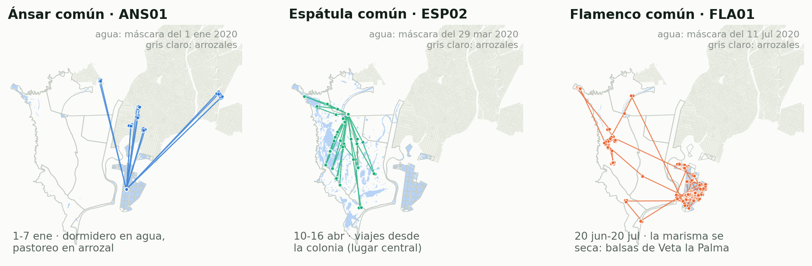
Cada panel usa la máscara de agua vigente en su periodo: el fondo también cambia con el tiempo
VectorPatrones
Paradas, encuentros y áreas que cambian de tamaño
Paradas
Fixes consecutivos que no salen de un radio durante un tiempo mínimo: dormideros, colonias, comederos. Radio 300 m, 3 h no es lo mismo que 1 km, 12 h.
Encuentros
Pares de fixes cerca en el espacio y en el tiempo. Dos puntos a 50 m con tres días de diferencia no son un encuentro. ANS01 y ANS02 forman pareja.
Áreas por periodo
Un polígono mínimo convexo o un núcleo de densidad por individuo y mes convierte el área de campeo en una serie temporal. Cuidado: un solo error o un vuelo largo lo multiplican.
VectorLa pregunta de hoy
¿Estaba el ave en el agua? Solo si comparas con la inundación de ese día
Es una unión espacial con una condición temporal. Sin ella, cada fix cruzaría con las 26 inundaciones a la vez.
-- SQL Workspace de GeoLibre (DuckDB). Las fechas llegan en ms.WITH fechas AS (
SELECT DISTINCT fecha_ini FROM inundacion_2019_2020),
fix AS (
SELECT g.*, f.fecha_ini AS fecha_mascara
FROM gps_aves_2019_2020 g
ASOF JOIN fechas f -- la máscara anteriorON g.timestamp >= f.fecha_ini) -- más próximaSELECT nombre_comun,
strftime(epoch_ms(timestamp), '%Y-%m') AS mes,
round(100 * avg((i.id IS NOT NULL)::INT), 1) AS pct_agua
FROM fix LEFT JOIN inundacion_2019_2020 i
ON i.fecha_ini = fix.fecha_mascara
AND ST_Intersects(fix.geom, i.geom)
GROUP BY ALL ORDER BY1, 2;
VectorResultado
El uso del agua sigue a la inundación… y al calendario de cada especie
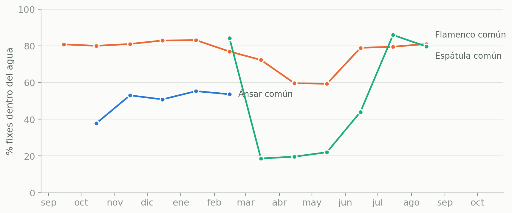
% de fixes dentro de un polígono de agua vigente · por mes local
Espátulas: del 84 % en febrero al 19 % en marzo. La colonia está en seco y pasan en ella la mitad del tiempo.
Flamencos: del 80 % al 59 % en abril y mayo, cuando se dispersan por la marisma. En verano vuelven a las balsas.
Ánsares: un 50 % estable que no existe: es la media de un 92 % de noche y un 2 % de día (diapositiva 4).
VectorHerramientas
Con qué se hace
GeoLibre
3.0 · Qiusheng Wu
Time Slider con ventana o acumulado sobre cualquier campo de fecha · Movement & time: velocidad de trayectoria, paradas y proximidad espacio-temporal · Emerging Hot Spot y densidad de núcleo · SQL Workspace con DuckDB Spatial, sin instalar nada.
QGIS · Temporal Controller
nativo desde 3.14
Animación de capas vectoriales y ráster con un campo de fecha o de inicio/fin; exporta fotogramas para vídeo. El heredero de TimeManager.
QGIS · Trajectools
2.7 · Anita Graser · requiere MovingPandas ≥ 0.22
MovingPandas dentro de Processing: crear trayectorias, añadir métricas, dividir por huecos, detectar paradas, generalizar, suavizar con filtro de Kalman y recortar en el tiempo.
QGIS · Animation Workbench
1.4 · Kartoza · requiere ffmpeg
No filtra por fechas: mueve la cámara de entidad en entidad (modos Planar, Sphere, Static) y exporta GIF o MP4. Con una capa ordenada en el tiempo cuenta la historia de una trayectoria. Expresiones con @hover_feature, @current_hover_frame…
Código
Python · R
movingpandas, scikit-mobility en Python · amt, move2, ctmm en R · Movebank para datos de animales.
Parte IIRáster y teledetección
Píxeles que cambian
Huecos y nubes, composites, tendencias, fenología e hidroperiodo.
RásterSeries irregulares
Una serie de satélite nunca es regular
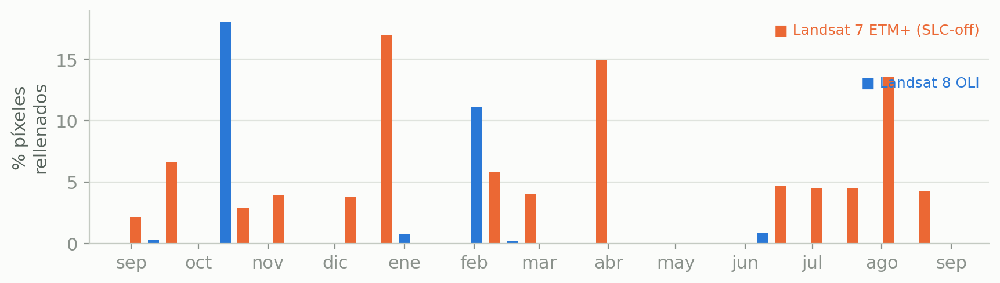
% de píxeles de la marisma sin dato válido en cada escena, rellenados después
Nubes y sombras: varían escena a escena (hasta un 21 % el 29 mar 2020).
Bandeado SLC-off: Landsat 7 pierde ~22 % de cada escena desde 2003.
Revisita irregular: 56 días sin ninguna imagen útil en primavera.
Lo que hemos hecho con las máscaras de hoy: cada píxel nublado o sin dato toma el valor de la fecha válida más próxima en el tiempo.
Es simple y transparente, pero asume que el agua no cambió entre ambas fechas. Alternativas: interpolación lineal, ajuste armónico, suavizado de Savitzky-Golay o, mejor aún, no rellenar y agregar en composites.
RásterLeer el tiempo en una imagen
Tres estaciones, tres canales: el color dice cuándo verdea cada píxel
Cada canal RGB guarda el NDVI de una estación. El color no es el aspecto del terreno: es su calendario.
Color
NDVI alto en…
Rojo
invierno
Verde
primavera
Azul
verano
Amarillo
invierno y primavera
Cian
primavera y verano
Fucsia
invierno y verano
Blanco
todo el año · negro: nunca
Es la idea de ndvi2gif: una imagen por año, una banda por periodo.
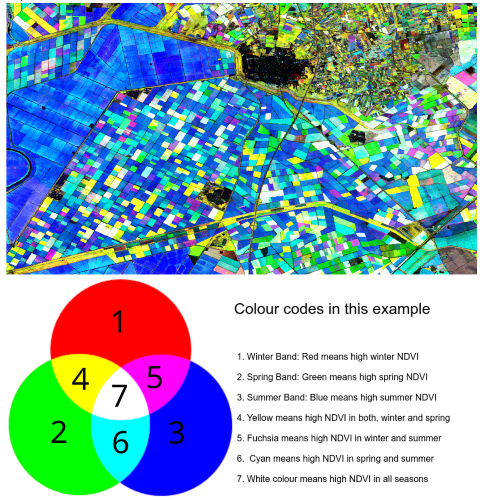
RásterComposites
Composites: reducir una colección a periodos comparables
Agrupas todas las imágenes de un periodo y aplicas un reductor por píxel. Así las nubes y los huecos se diluyen y todos los años tienen las mismas fechas.
Reductor
Útil para
max · p90
Pico de vegetación, evitar nubes (NDVI)
median
Estado típico, robusto a valores raros
std · cv · range
Cuánto varía el píxel dentro del periodo
count
Cuántas observaciones hay: la calidad
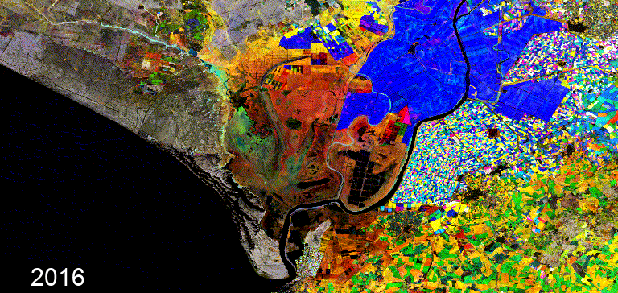
ndvi2gif · composites estacionales en color: cada canal RGB es una estación
Error frecuente. Un composite de máximo no es el mejor día del periodo: es un mosaico de días distintos. Cada píxel viene de la fecha en que tuvo su valor máximo, y dos píxeles vecinos pueden venir de semanas diferentes.
La alternativa al composite es rellenar el hueco: con la fecha válida más próxima (lo que hicimos con las máscaras del curso), interpolando o ajustando una curva.
RásterTendencias y fenología
¿Cambia a largo plazo? ¿Cuándo empieza y acaba la estación?
Método
Responde a
Mann-Kendall
¿Hay tendencia monótona? No paramétrico, tolera valores extremos
Pendiente de Sen
¿Cuánto cambia por año? Mediana de todas las pendientes
SOS · POS · EOS
Inicio, pico y final de la estación de crecimiento
Anomalía
¿Este ciclo es raro frente a la media histórica?
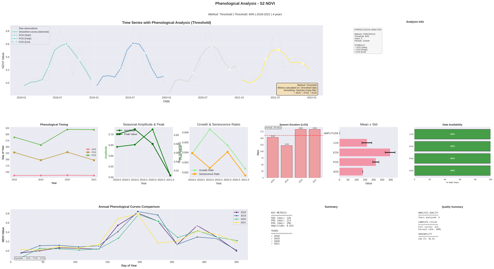
Fenología de arrozal en Isla Mayor · método del umbral · ndvi2gif
Mann-Kendall: preguntar a todas las parejas de años
Año
2019
2020
2021
2022
2023
2024
NDVI
0,15
0,17
0,16
0,19
0,18
0,21
Todos los pares (año anterior, año posterior): con n = 6 hay n(n−1)/2 = 15.
Un signo a cada par: +1 si sube, −1 si baja. Aquí 13 suben y 2 bajan.
Se suman: S = 13 − 2 = 11. ¿Es mucho? Depende de cuánto variaría S por azar.
Var(S) = n(n−1)(2n+5)/18 = 28,33 Z = (S − 1) / √Var(S) = 1,88
El −1 es la corrección por continuidad; si hay empates se resta un término por cada grupo
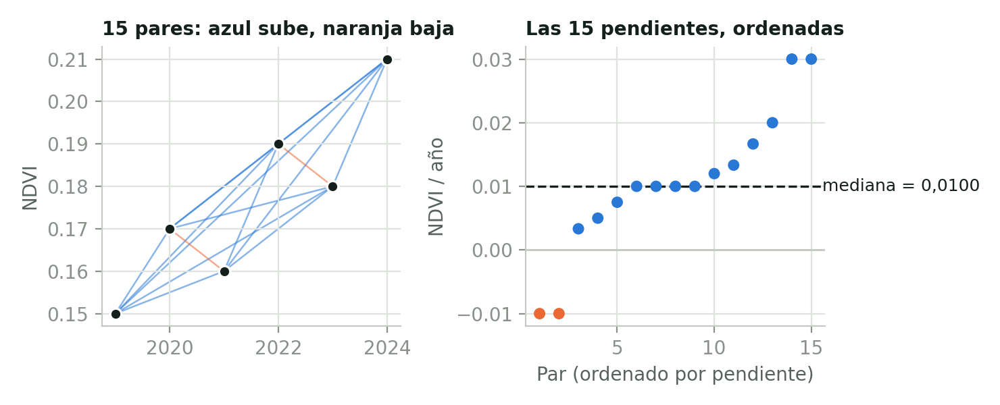
Izquierda: los 15 pares, azul sube y naranja baja · derecha: la pendiente de cada par, ordenadas
No usa los valores, solo el orden: una nube mal enmascarada apenas lo mueve, y en cambio tira con fuerza de una recta de regresión.
FichaTendencias · 2 de 3
τ mide la consistencia; el valor p, si el azar la explica
τ = S / nº de pares = 11 / 15 = 0,73
De −1 a +1 · es una correlación de rangos entre el tiempo y la variable
Se lee como «de todas las parejas de años, qué proporción neta sube». No dice cuánto sube: solo con qué consistencia.
El valor p es la probabilidad de ver una tendencia al menos tan marcada como la observada si en realidad no hubiera ninguna. Aquí Z = 1,88 da p = 0,060: con solo 6 años, un patrón así aparece por azar con relativa facilidad, aunque 13 de 15 pares suban.
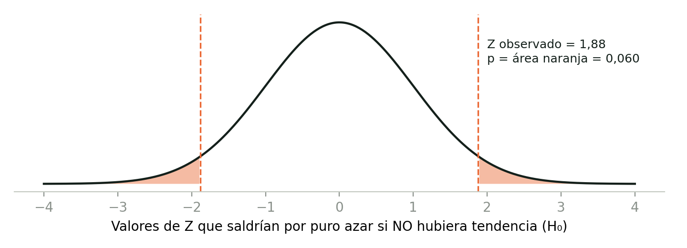
El valor p es el área de las dos colas más allá del Z observado
El valor p NO es…
Porque…
La probabilidad de que no haya tendencia
Se calcula suponiendo que no la hay
Una medida de cuánto cambia
Un cambio minúsculo con muchos datos da un p diminuto. Eso lo dice Sen
Un interruptor mágico en 0,05
p = 0,049 y p = 0,051 cuentan prácticamente lo mismo
FichaTendencias · 3 de 3
Sen: la mediana de todas las pendientes
pendiente(i, j) = (valorⱼ − valorᵢ) / (añoⱼ − añoᵢ) Sen = mediana de las 15 = 0,010 NDVI/año
Aguanta hasta un 29 % de datos contaminados; la regresión, ni uno en el peor caso
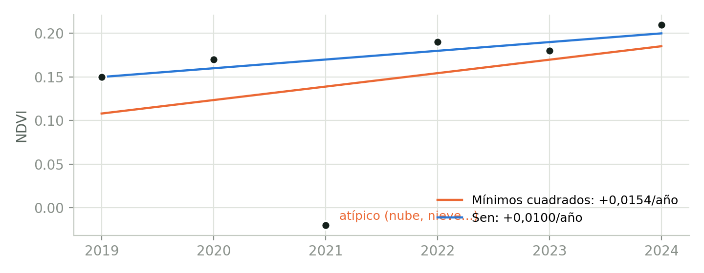
Con un atípico en 2021, la regresión pasa de 0,0103 a 0,0154 NDVI/año (+50 %); Sen se queda en 0,0100
Los dos casos del viernes · NDVI máximo de verano, 1985–2025
Serie
n
τ
p
Sen/década
Monte Perdido > 2.500 m
40
0,50
0,000007
+0,018
· solo TM/ETM+ 1985–2011
26
0,26
0,071
+0,011
· solo OLI 2013–2025
13
0,64
0,003
+0,049
Sierra Nevada > 2.800 m
41
0,26
0,016
+0,004
· solo TM/ETM+ 1985–2011
27
0,00
1,00
0,000
· solo OLI 2013–2025
13
0,59
0,006
+0,021
Casi todo el verdeo está en la época de Landsat 8. Parte puede ser cambio de sensor, y la autocorrelación (0,41 en Sierra Nevada) infla la significación: la lectura honesta es «hay señal, no hay prueba de tendencia larga».
FichaFenología
Cuatro maneras de ponerle fecha a la primavera
Métrica
Qué es
SOS
Start of season · día en que empieza a verdear
POS
Peak of season · día del máximo, y su valor
EOS
End of season · día en que termina la senescencia
LOS
EOS − SOS, en días
Savitzky-Golay. Antes de buscar el SOS hay que quitar ruido sin aplanar el pico. La media móvil es como difuminar una foto: quita el ruido y también los bordes. S-G es una regla flexible que se apoya en los puntos: ajusta un polinomio en cada ventana y se queda con su centro.
Método
Cómo define el SOS
Umbral
El día en que cruza mínimo + X % de la amplitud. Sencillo; en ndvi2gif el umbral es adaptativo
Derivada
El momento de mayor velocidad de verdeo. Tiene sentido biológico, pero exige suavizar antes
Doble logística
Una sigmoide que sube y otra que baja. Métricas muy limpias, pero necesita datos (≥ 6) y puede no converger
Armónicos
El año como suma de ondas. Tolera huecos y se calcula píxel a píxel en Earth Engine: es el de SpatialPhenologyAnalyzer
Error frecuente. Comparar SOS de métodos o umbrales distintos. El SOS no es una propiedad de la planta, es una definición: con el 20 % sale semanas antes que con el 50 %.
RásterHidroperiodo
Hidroperiodo: toda la película en un solo mapa
Número de días que cada píxel estuvo inundado en el ciclo hidrológico, ponderando cada escena por el tiempo que representa.
Resume las 26 máscaras de 2019-2020 en una capa.
Pierde el cuándo: 90 días en invierno no son 90 en primavera.
Con 40 ciclos (1984–2024) permite anomalías y tendencias.
from ndvi2gif import HydroperiodAnalyzer
ha = HydroperiodAnalyzer(ns) # ns: NdviSeasonality
hyd = ha.compute_hydroperiod(index='mndwi', hyd_year=2019)
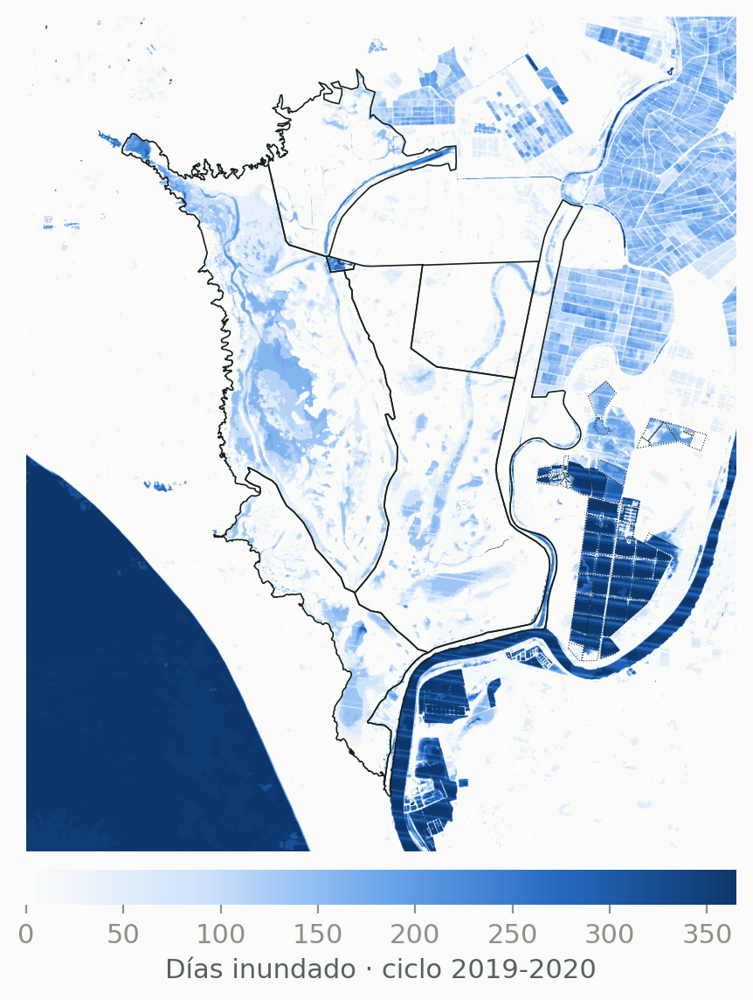
Protocolo v2 · hidroperiodo 2019-2020 · recintos de marisma y balsas de Veta la Palma
FichaHidroperiodo
De 26 imágenes a 365 días: la ponderación midpoint
Cada escena representa los días que van desde el punto medio con la escena anterior hasta el punto medio con la siguiente. La primera cubre desde el día 0; la última, hasta el 365.
Escena
Día
Territorio
Días
¿Agua?
1
10
0 → 25
25
no
2
40
25 → 70
45
sí
3
100
70 → 365
295
no
Hidroperiodo = 45 días. Y ahí está el punto débil: la escena 3 representa 295 días. Si llueve en enero y no hay imagen, esa inundación no existe para el cálculo.
IRT · ¿están bien repartidas las imágenes?
De 0 (todas amontonadas en un periodo) a 1 (repartidas por igual entre los 12 meses).
IRT global = 1 − Gini IRT por píxel = N² / (12 · Σ nᵢ²)
nᵢ = observaciones válidas del mes i · N = total · el de Simpson, porque las nubes tapan cada píxel de forma distinta
24 observaciones, 2 por mes → 576 / (12 · 48) = 1. Las 24 en un solo mes → 576 / (12 · 576) = 0,08.
Es un diario de lluvia: si solo apuntas en abril, no sabes cuánto llovió en el año aunque tengas 30 anotaciones.
PrácticaGeoLibre
Un SIG que cabe en el navegador
GeoLibre, de Qiusheng Wu: lo que usaremos hoy y lo que conviene saber antes de empezar.
GeoLibreQué es
Nada que instalar, y los datos no salen de tu equipo
Código abierto (MIT), de Qiusheng Wu, autor de geemap y leafmap. Versión 3.0, septiembre de 2026.
El mismo programa en navegador, escritorio, móvil y Jupyter.
Todo se ejecuta en tu navegador: DuckDB para leer y consultar datos, WebAssembly para más de 1.000 herramientas de geoproceso (Whitebox).
Pensado para formatos nativos de la nube: se leen por partes y a distancia, sin descargar el archivo completo.
Hoy: Control de tiempo, herramientas de Movimiento y tiempo y el Espacio de trabajo SQL.
Por qué GeoParquet y no GeoJSON
19,6 MB
gps_aves_2019_2020.geojson · texto, se lee entero
1,8 MB
gps_aves_2019_2020.parquet · columnar y comprimido
5,5 MB
inundacion_2019_2020.geojson
1,2 MB
inundacion_2019_2020.parquet
La familia nube: GeoParquet (vector), COG (ráster), PMTiles (teselas), Zarr (cubos).
FichaFormatos
Por columnas, en binario y con el índice al final
Un CSV o un GeoJSON son texto por filas: cada fix entero, y luego el siguiente. Parquet guarda por columnas y en binario: todos los HDOP juntos, todas las fechas juntas.
Lees solo lo que necesitas: si la consulta usa 2 columnas de 15, las otras 13 ni se tocan.
Comprime mucho mejor: los valores de una columna se parecen entre sí y el diccionario guarda cada uno una vez. id_ave: 12 valores repetidos 45.544 veces en 152 bytes.
Conserva los tipos: una fecha es un entero de 64 bits con tipo timestamp, no un texto por interpretar.
El pie guarda el mínimo y el máximo de cada columna: si buscas 2020 y un bloque acaba en 2019, se salta sin leerlo. Y como dice dónde vive cada columna, DuckDB lee un Parquet remoto por trozos con peticiones HTTP de rango: GeoLibre consulta un archivo de gigas sin descargarlo.
PAR1 · firma de 4 bytes
Grupo de filasgeom (WKB) · lon/lat · timestamp · hdop · id_ave · especie 45.544 filas en 1 grupo, ZSTD
Pie de metadatosesquema y tipos · mínimo/máximo por columna y grupo · la clave geo de GeoParquet: WKB, bbox y CRS 3.173 bytes
longitud del pie · PAR1
No se edita (para digitalizar, GeoPackage) y no tiene índice espacial de verdad, solo estadísticas.
GeoLibreDónde está cada cosa
El ejercicio en cuatro rutas de menú
Para
Ruta
Cargar los datos
Añadir datos → Capa vectorial
Animar en el tiempo
Complementos → Control de tiempo → Activar
Trayectorias, paradas, encuentros
Procesamiento → Caja de herramientas de GeoLibre → Vectorial → Movimiento y tiempo
Consultas espacio-temporales
Procesamiento → Espacio de trabajo SQL
Tres avisos que ahorran tiempo
Las fechas llegan en milisegundos desde 1970. En SQL: epoch_ms(timestamp).
Una sentencia SQL por ejecución. Las vistas (CREATE VIEW) sí se conservan entre ejecuciones.
Si recargas la pestaña pierdes capas y vistas. Guarda el proyecto al acabar cada bloque.
TeoríaGoogle Earth Engine
El laboratorio está en la nube
Qué es Earth Engine, cómo trabaja y cómo dejar tu cuenta lista antes del jueves.
Earth EngineQué es
Tú escribes la receta; los servidores de Google cocinan
Catálogo público de varios petabytes, ya preparado: Landsat desde los 80, Sentinel-1/2/3, MODIS, clima (ERA5, CHIRPS), MDT…
Cómputo en servidor. No descargas imágenes: describes operaciones y Earth Engine las ejecuta sobre todo el archivo.
Evaluación diferida. Nada se calcula hasta que pides un resultado: un número (getInfo), una capa en el mapa o una exportación a Drive.
Dos lenguajes: JavaScript en el Code Editor y Python en Colab o Jupyter, con geemap y ndvi2gif por encima.
import ee
ee.Initialize(project='tu-id-de-proyecto')
# Solo se describe la operación: no viaja nada
ndvi = (ee.ImageCollection('COPERNICUS/S2_SR_HARMONIZED')
.filterDate('2020-02-01', '2020-02-29')
.map(lambda i: i.normalizedDifference(['B8', 'B4']))
.median())
# getInfo(): ahora sí calcula el servidor
p = ee.Geometry.Point(-6.40, 36.98)
ndvi.reduceRegion(ee.Reducer.mean(), p, 10).getInfo()
Cada cálculo va a tu cuenta: cada persona necesita un proyecto de Google Cloud registrado. Para docencia e investigación es gratuito.
Earth EngineTu cuenta · ≈ 15 min · antes del jueves
Tu cuenta en cinco pasos
Una cuenta de Google. Mejor la institucional si tu centro usa Google, como el CSIC. Cierra las demás cuentas del navegador o usa un perfil aparte.
Un proyecto de Cloud registrado para uso no comercial, desde console.cloud.google.com/earth-engine
La API de Earth Engine activada en ese proyecto.
Saber cuánto cómputo tienes: los proyectos nuevos empiezan con 150 EECU-horas al mes.
Comprobarlo en Google Colab con dos líneas de Python.
El error nº 1: tener varias cuentas de Google abiertas. Cualquier paso puede caer en la cuenta equivocada sin avisar.
El error nº 2: confundir el nombre del proyecto con su ID. En ee.Initialize() va el ID.
Guía completa con capturas: cuenta-earth-engine.pdf
Earth EnginePaso 2
Registrar el proyecto: el formulario decide si es no comercial
Empieza en console.cloud.google.com/earth-engine: crea el proyecto y lo registra de una vez.
Nombre reconocible (sigavanzado-tunombre) y acepta el ID que propone Google.
Organización: institución académica. Las ayudas de investigación no cuentan como pago.
No envíes hasta que el recuadro final diga que cumples los requisitos.
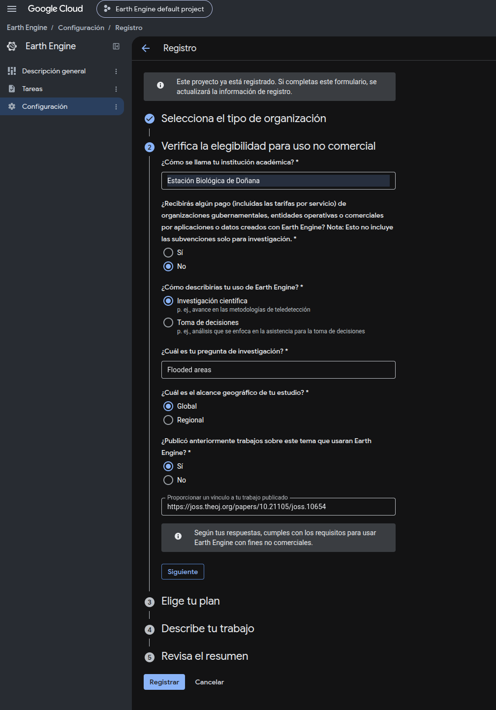
El paso del cuestionario que decide: institución, financiación y objetivo
Earth EnginePasos 2 y 3
El ID no es el nombre, y la API tiene que estar encendida
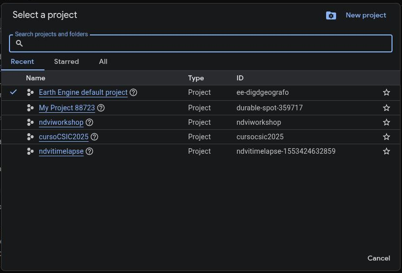
Selector de proyectos: nombre visible a un lado, ID al otro. El ID va en minúsculas, con guiones y a menudo con dígitos al final
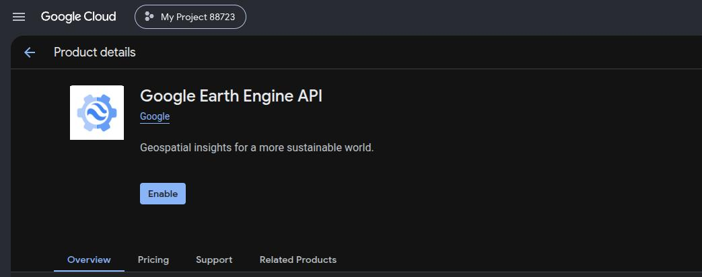
Biblioteca de APIs → Earth Engine API. Si el botón dice Manage, ya está activada
Earth EnginePaso 4
Cuánto cómputo tienes cada mes
Nivel
EECU-h/mes
Condición
Community
150
Donde empieza todo proyecto nuevo. Sobra para el curso
Contributor
1.000
Gratis, con cuenta de facturación asociada (no se cobra)
Partner
100.000
Por solicitud y revisión, semanas
Si se agota, no te quedas fuera: todo sigue funcionando, pero más lento, hasta el día 1 del mes siguiente.
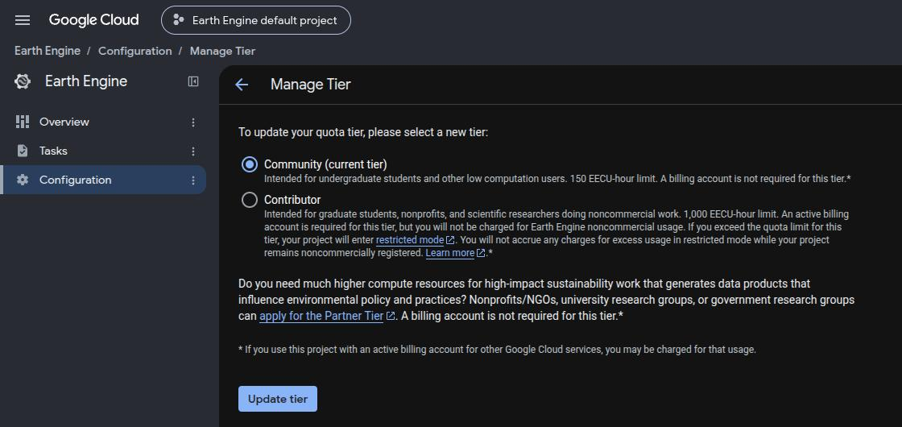
Earth Engine › Configuration › Manage tier
Earth EnginePaso 5
La prueba de que todo funciona: dos celdas en Colab
# Celda 1 · autenticar e inicializarimport ee
ee.Authenticate()
ee.Initialize(project='tu-id-de-proyecto')
# Celda 2 · pedir un dato real al servidor
print(ee.Image('USGS/SRTMGL1_003')
.get('system:id').getInfo())
# USGS/SRTMGL1_003
Usa Chrome, Edge o Brave para autenticarte. En Firefox la página del código puede cerrarse sin mostrarlo.
Pega el código de autorización entero y enseguida: es de un solo uso y caduca.
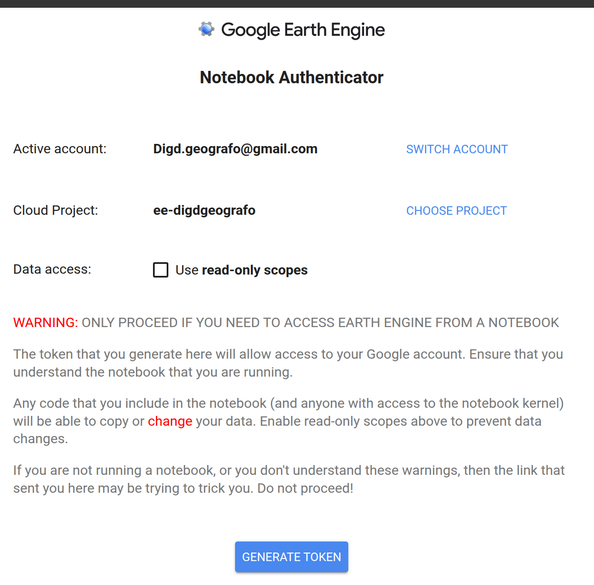
El autenticador confirma con qué cuenta y sobre qué proyecto se genera el permiso
Earth EngineProblemas frecuentes
Cuando no funciona
Mensaje o síntoma
Causa probable y solución
That authorization code is invalid or has expired
Código incompleto, caducado o ya usado. Vuelve a ejecutar ee.Authenticate() y copia uno nuevo
Google no llega a enseñar ningún código
Navegador que no es Chromium (Firefox, Safari). Repite en Chrome, Edge o Brave
Earth Engine client library not initialized
Falta ee.Initialize() o se ejecutó sin project=
Not signed up · project is not registered
El proyecto existe pero no terminó el registro: vuelve al paso 2
Earth Engine API has not been used in project…
API apagada: paso 3 (el mensaje trae el enlace para activarla)
Autentica bien pero falla al inicializar
Casi siempre has puesto el nombre del proyecto en vez del ID
Todo va lentísimo
Cuota del mes agotada: modo restringido hasta el día 1 (paso 4)
Teoríandvi2gif
Composites estacionales con Google Earth Engine
Una librería de Python de código abierto para ver el tiempo en una imagen.
ndvi2gifEl principio
El concurso y la convergencia (2020)
Tres cosas coincidieron:
Python. Años programando y ganas de convertirlo en una librería.
Google Earth Engine en auge y la moda de los GIF de NDVI de países y continentes.
Una idea de Javier Bustamante en su curso de series temporales: para ver el tiempo en una imagen, asigna a cada banda una fecha.
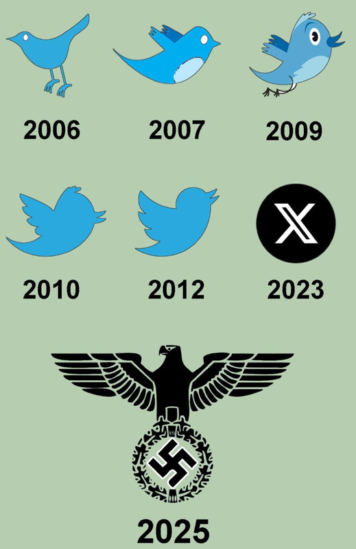
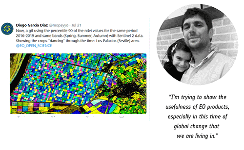
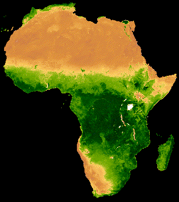
ndvi2gifLa idea
Una imagen por año, una banda por periodo
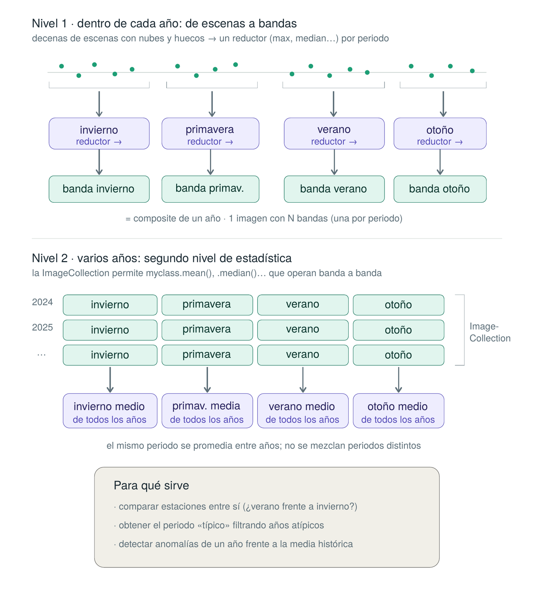
Nivel 1. Todas las escenas de un periodo del año se reducen a una banda: el máximo, la mediana o un percentil.
Nivel 2. Con varios años, cada periodo se resume otra vez: el invierno medio de toda la serie, por ejemplo.
Unido a las colecciones de GEE, da consultas directas: la inundación máxima de invierno en la marisma por décadas o en qué época del año cada embalse alcanza su pico de clorofila.
ndvi2gifComposites
El calendario de cada píxel, en color
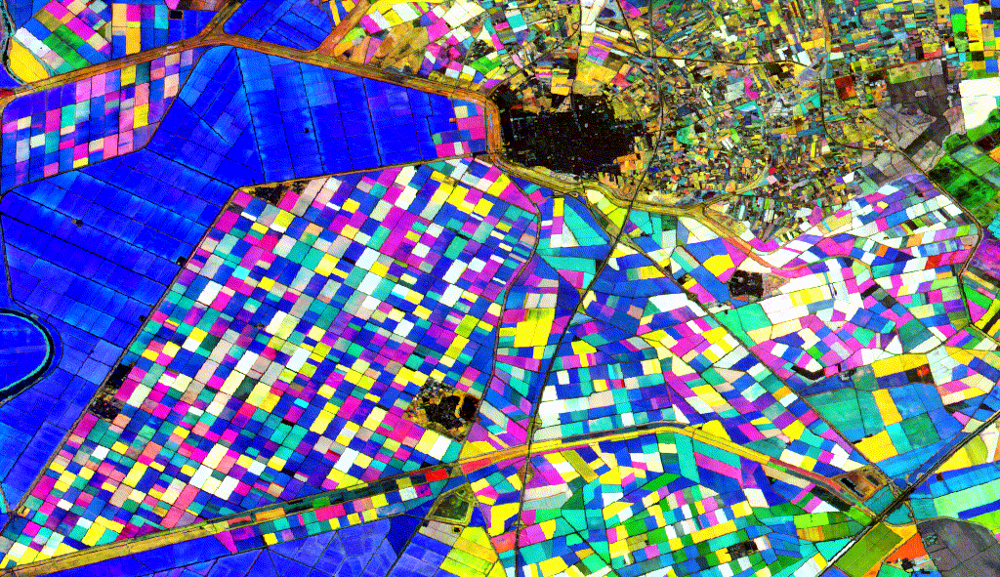
Los Palacios y Villafranca (Sevilla)
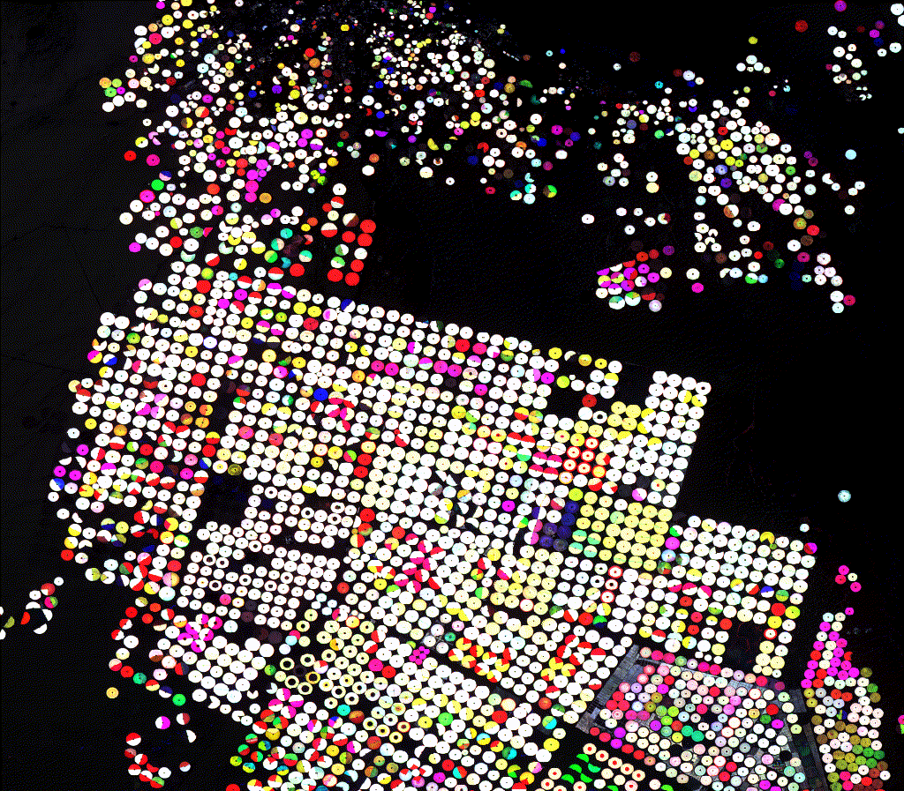
Tubarjal (Arabia Saudí)
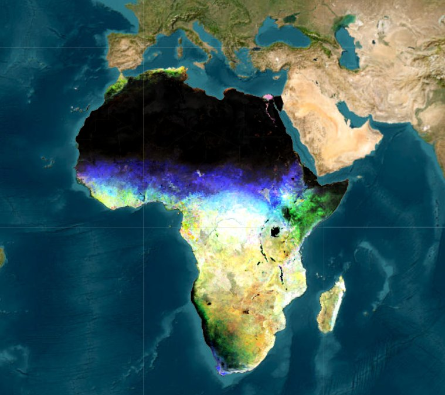
África
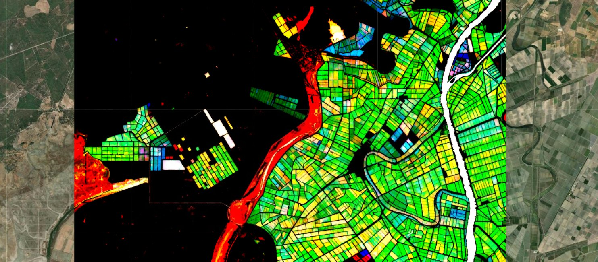
Arrozal
ndvi2gifColonia, 2025
De una vidriera a una librería
La librería creció a trompicones, como proyecto personal: en 2020 solo existía NdviSeasonality.
Primavera de 2025, catedral de Colonia: la vidriera de Gerhard Richter se parece muchísimo a un composite estacional.
A la vuelta llegaron los módulos de radar, clasificación y series temporales. Después, fenología espacial e hidroperiodo.
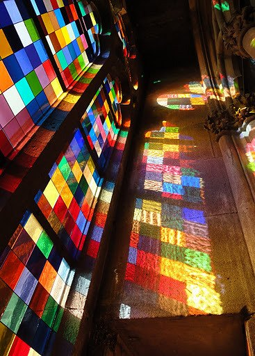
ndvi2gifSin complejos
El código, la modestia y la humildad
ndvi2gifCómo está organizada
Una clase central y cinco módulos que la reutilizan
Clase
Para qué
NdviSeasonality
Composites por periodos: la pieza de la que cuelga todo
S1ARDProcessor
Sentinel-1 listo para analizar
LandCoverClassifier
Clasificación con métricas estacionales
TimeSeriesAnalyzer
Tendencias y fenología
HydroperiodAnalyzer
Días de inundación al año
Todo se calcula en los servidores de Earth Engine. pip install ndvi2gif · conda install -c conda-forge ndvi2gif
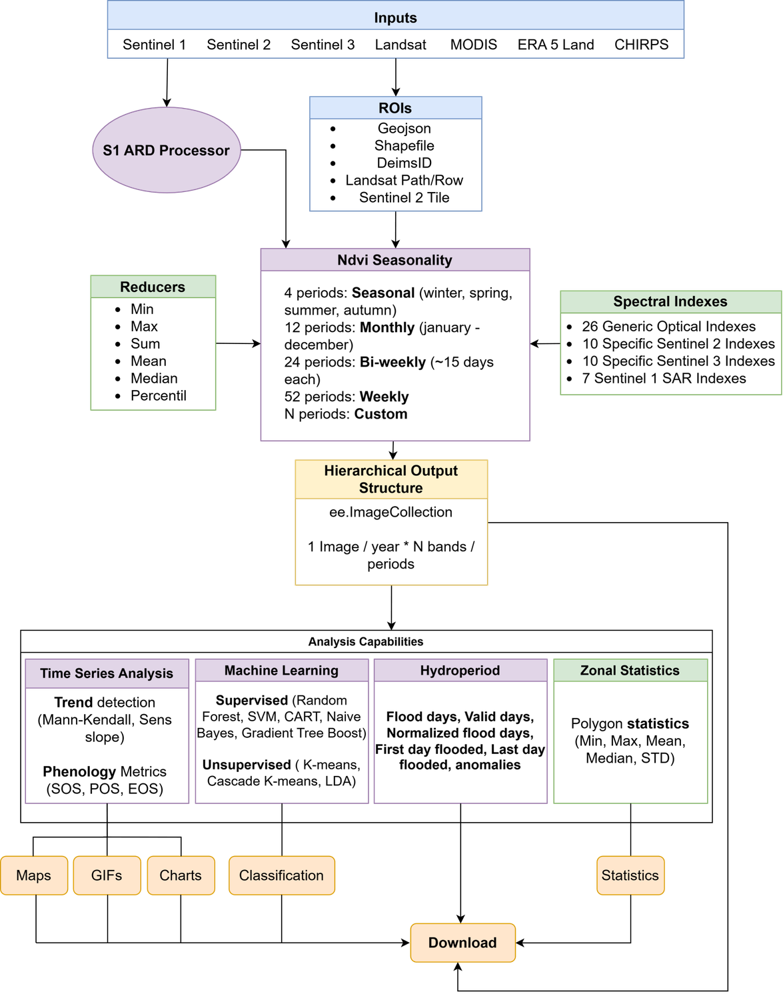
ndvi2gifClase 1 de 5 · el origen
NdviSeasonality: composites temporales en el servidor
Sensores y datos
Sentinel-1, 2 y 3 · Landsat 4–9 · MODIS
Clima: ERA5-Land y CHIRPS
Bandas estandarizadas (Blue… Swir2) y reflectancia 0–1
Índices y periodos
Hasta 45 índices en Sentinel-2: vegetación, agua, fuego, nieve, SAR…
4 estaciones · 12 meses · 24 quincenas · o N periodos a medida
ROI: geometría, shapefile, GeoJSON, tesela WRS/MGRS o ID de DEIMS
Reductor por periodo
max pico de verdor · median robusto
mean · sum acumulados (lluvia) · percentile a medida
std · cv · range dispersión · count nº de observaciones
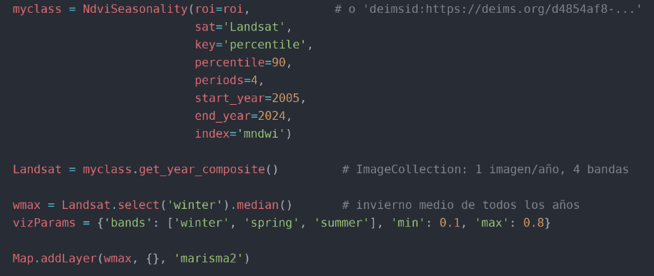
ndvi2gifClase 2 de 5 · preprocesado radar
S1ARDProcessor: Sentinel-1 listo para analizar
El radar ve de noche y entre nubes… pero llega lleno de «sal y pimienta». Este módulo lo convierte en Analysis Ready Data dentro de GEE.
Corrección del terreno
Aplanado radiométrico VOLUME / SURFACE
MDT: Copernicus 30/90 m · SRTM 30/90 m
Cinco filtros de speckle
Refined Lee (por defecto) · Lee · Lee Sigma
Gamma MAP · Boxcar, con kernel configurable
Salida
Lineal o decibelios
Se usa como un índice más: vh · vv · rvi · vv_vh_ratio · dpsvi
S1 GRD crudo→Aplanado del terreno→Filtro de speckle→Lineal / dB→Índice radar
ndvi2gifClase 3 de 5 · clasificación
LandCoverClassifier: poniendo etiquetas
Usa las métricas estacionales como variables multitemporales. La fenología separa cultivos, marisma y monte mejor que una sola imagen.
Sin datos de entrenamiento: descubre patrones latentes
Validación incluida: matriz de confusión · exactitud global y Kappa · exactitud de productor y de usuario por clase · importancia de variables.
FichaClasificadores · 1 de 2
Clasificar es trazar fronteras en un espacio de muchas dimensiones
Algoritmo
Cómo traza la frontera
CART
Preguntas sí/no encadenadas sobre una variable cada vez. Se entiende y se dibuja, pero memoriza el entrenamiento
Random Forest
Cien árboles, cada uno con una muestra al azar y solo unas variables por nudo; votan. Los errores se compensan. El de ndvi2gif
SVM
La carretera más ancha que cabe entre las clases. Solo importan los puntos del borde. Va bien con pocas muestras; hay que escalar las variables
Naive Bayes
¿Qué clase es más probable con estos valores? Supone variables independientes, cosa que las bandas estacionales no cumplen
K-means
Eliges k centros, cada píxel va al más cercano, los centros se mudan a la media, y vuelta a empezar
Cascade K-means
Prueba todas las k del rango y se queda con la mejor según Calinski-Harabasz: grupos compactos y bien separados
Cada píxel es un punto en un espacio de muchas dimensiones: NDVI de invierno, de primavera, de verano… Por eso las métricas estacionales ayudan tanto: el arrozal y la marisma pueden tener el mismo NDVI en junio, pero no el mismo calendario.
En el no supervisado, los grupos no son clases: el grupo 7 puede juntar marisma y lámina de arrozal. Quien decide qué es cada uno eres tú.
FichaClasificadores · 2 de 2
¿Ha clasificado bien? La matriz de confusión
Referencia ↓ · Mapa →
Marisma
Arrozal
Monte
Total
Productor
Marisma
45
4
1
50
90 %
Arrozal
6
38
6
50
76 %
Monte
2
3
45
50
90 %
Total
53
45
52
150
Usuario
84,9 %
84,4 %
86,5 %
Global = (45 + 38 + 45) / 150 = 85,3 % · Kappa = 0,78
Con muestras reservadas, que no se usaron para entrenar
Productor (por filas): de los arrozales reales, ¿cuántos encuentra el mapa? 38/50. Su complemento es el error de omisión.
Usuario (por columnas): de lo que el mapa llama arrozal, ¿cuánto lo es? 38/45. Su complemento, el error de comisión. Es el que importa a quien va al campo.
Tres trampas. Píxeles vecinos en entrenamiento y validación inflan la exactitud (separa por polígonos). El Kappa ya no se recomienda como medida principal. Y un 95 % global puede esconder que la clase rara, la que te interesa, sale fatal.
ndvi2gifClase 4 de 5 · análisis temporal
TimeSeriesAnalyzer: leer el tiempo
Extrae la serie de un punto o región y la interroga: ¿hay tendencia significativa? ¿cuándo verdea?
Tendencias robustas
Test de Mann-Kendall (no paramétrico)
Pendiente de Sen
Significancia sin asumir normalidad
Fenología
Inicio, pico y fin de la estación
Métodos: umbral · derivada · logístico
Amplitud, duración y tasas
En el espacio
SpatialTrendAnalyzer: pendiente píxel a píxel
SpatialPhenologyAnalyzer: rásteres de SOS/POS/EOS (umbral, derivada, armónico)
Paneles en una llamada:plot_comprehensive_analysis() y plot_phenology_analysis() generan serie y tendencia, patrón estacional, comparación interanual, autocorrelación, distribución y calidad del dato.
ndvi2gifClase 5 de 5 · hidroperiodo
HydroperiodAnalyzer: cuántos días bajo el agua
Días de inundación al año, píxel a píxel, íntegramente en GEE. Pensado para humedales como Doñana (desde la v1.2).
Ponderación midpoint
Cada escena «pesa» los días hasta el punto medio con sus vecinas
inundacion_2019_2020 · 3.460 polígonos de agua con fecha_ini y fecha_fin
recintos_marisma y balsas_veta_la_palma
inundacion_por_recinto_2019_2020.csv · tabla larga recinto × fecha
hidroperiodo_2019_2020_marisma.tif
GeoLibre: web.geolibre.app, sin instalar. Plan B: QGIS 3.40 + Trajectools con el GeoPackage.
Para seguirBibliografía
Bibliografía
Teledetección y Earth Engine
Gorelick, N. et al. (2017). Google Earth Engine: planetary-scale geospatial analysis for everyone. Remote Sensing of Environment 202: 18–27.
Wu, Q. (2020). geemap: a Python package for interactive mapping with Google Earth Engine. Journal of Open Source Software 5(51): 2305.
García Díaz, D. Ndvi2Gif: multi-seasonal remote sensing index composites. Journal of Open Source Software. doi:10.21105/joss.10654
Roy, D. P. et al. (2016). Characterization of Landsat-7 to Landsat-8 reflective wavelength and NDVI continuity. Remote Sensing of Environment 185: 57–70. doi:10.1016/j.rse.2015.12.024 (acceso abierto)
Mann, H. B. (1945). Nonparametric tests against trend. Econometrica 13: 245–259 · Sen, P. K. (1968). JASA 63: 1379–1389.
Tiempo, movimiento y ecología
Hägerstrand, T. (1970). What about people in regional science? Papers of the Regional Science Association 24: 7–21.
Graser, A. (2019). MovingPandas: efficient structures for movement data in Python. GI_Forum 7(1): 54–68.
Kays, R. et al. (2015). Terrestrial animal tracking as an eye on life and planet. Science 348: aaa2478.
Kranstauber, B. et al. move2: R package for processing movement data. Methods in Ecology and Evolution.